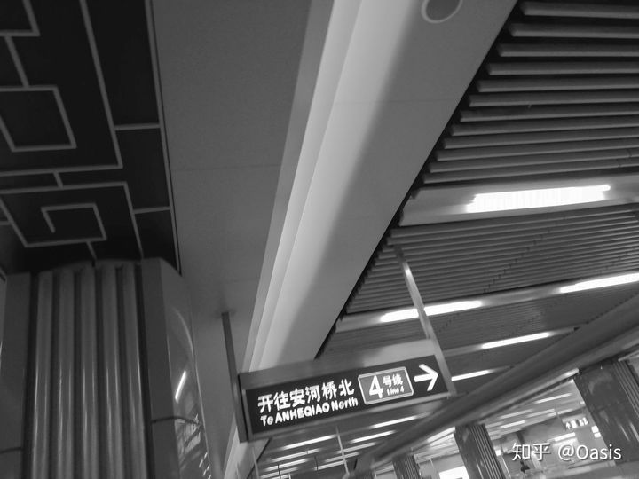

1.《Never had a dream come true》
说来奇怪，
我和毫无关系的陌生人同桌吃过饭,
拥挤的公交车上挨着坐，
火车上睡在对方的上下铺或对面，
一起在喜欢的歌手的演唱会上热泪盈眶。
我那么喜欢你，却和你什么也没做。
——《Never had a dream come true》
2.《A Little Story》
我因车祸而失明，
所以我从不知女友长什么样。
那年，她得了胃癌，临终前她将眼角膜移植给了我。
我恢复光明后的第一件事就是找她的照片，
然而我只找到她留给我的一封信，
信里有一张空白照片，照片上写有一句话：
“别再想我长什么样，
下一个你爱上的人，
就是我的模样。”
——《A Little Story》
3.《假装》
你生日的那天，我坐火车来到你学校。
给你发消息“猜猜我在哪”，
你说“你来看我啦？”
我站在校门口，
看见你握着你男朋友的手。
我说“猜错啦，我在上课，娜，生日快乐。”
那天没有回去的车票，
我在两块钱一个小时的网吧里待了一晚上，
烟抽得我有点嗓子哑了。
——《假装》
4.《理想三旬》
有一个民谣青年曾说：
最单纯的喜欢就是，
就算你拒绝了我，
我对你也永远没有埋怨。
但我不会再靠近了。
如果你有求于我，
我依然会鞠躬尽瘁。
从今往后我会把喜欢藏起来，
不再招摇过市了，我会努力过得好，希望你也是。
——《理想三旬》
5.《安河桥北》
他被炒了两周了，一直瞒着老婆在找工作。
他下班回家，正想着把应聘简历藏好。
却从床底找到老婆的乳腺癌诊断书。
她叫他吃饭，老公，今天工作一天挺累的吧
。他说，还好，有你在不累。你的体检结果呢?
她笑道，没事，挺好的，吃饭吧。
两个人都忍着泪对坐着。
窗外，正是万家灯火。
——《安河桥北》

6.《不露声色》
毕业季时候，因为离校手续出了问题，我自己留在宿舍打游戏。
室友一个个的离去，开始也没觉得怎样，游戏从早上打到下午，
点外卖的时候习惯性问室友吃什么，结果回头空荡荡的宿舍只有自己。
夕阳从外照进来像是午觉突然醒了，孤独在黄昏里跳动，心脏像是挨了一记闷拳。
孤独就像人说的那样，最后走的人关门最轻。
——《不露声色》
7.《青柠》
他是好学生，成绩好长得俊。她是懒学生，爱玩爱闹。
新学期他们成了同桌。他总是斜视或者俾睨她，从不拿正眼看她，
听她讲笑话都只会用鼻孔哼。她气他那副死样子，就报仇似的到处说,他暗恋她。
他听到谣言后把她堵到墙角里，她吓得不行，
刚想抱头求饶，却居然看到他涨红了脸：
你是什么时候知道的？
——《青柠》
8.《董小姐》
据一位北京的兄弟说，安和桥下是一条臭水沟子。
可以推测这首歌包括了很多谎话。
我和董都恐惧衰老，嘴角向下的时候并不美，前半生挺好的，但明天不太好。
所以那些可能都不是真的。
——《董小姐》
9.《姑娘》
她算是我的初恋吧
2019.11.26晚去上海见了她 这么大第一次和女生牵手
那天晚上她亲了我 二十多年来第一次和女孩亲吻
第二天我们一起出去压马路
一起唱胸大的姑娘
一起唱东西
一起看电影
一起拍了照片
二十多年唯一和女生合照 照片舍不得删 也舍不得她
以后可能也遇不到和我一起唱胸大的姑娘的女生了吧
——《姑娘》-留声玩具
10.《南山南》
“马頔说 我写过一首歌
常有人听完后说它太悲伤
接着问起 这首歌里是不是有一个故事
我说 你听到这首歌的时候 它就已经和我无关了
你掉的眼泪 才是只有你自己知道的故事”
你在南方的艳阳里大雪纷飞，我在北方的寒夜里四季如春”是什么意思，
直到上了大学，你去了北方，我到了南方，
看到你朋友圈发的你和一个女孩在雪中的合照，雪落了你们满头，
你配文说，执子之手与子偕老，
而我还穿着短袖，手中的冰棍瞬间不甜了，
我才明白，为什么南方的艳阳里也会大雪纷飞了
——《南山南》